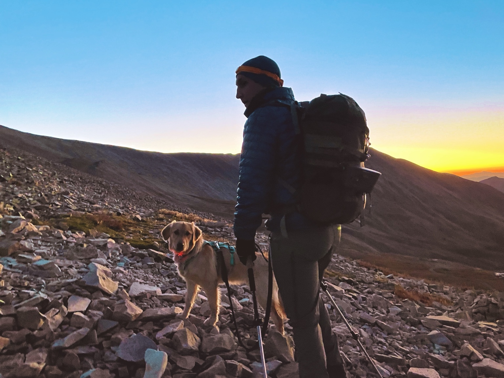

Mount Sherman · September 2022Alex Ford Adventures
I wanted a place I could go to reminisce.
Somewhere to keep the races, mountain days, ski trips, rides, routes, people, and little details that make an adventure worth remembering.
Browse the full chronology →Latest adventure
Air Force Aim High Challenge
September 18–19, 2026 · Fairborn & Wright-Patterson Air Force Base, Ohio
Training for New York. Almost everything went wrong.
It was humid. I was late to the start and ran two miles just to get there, lost my phone, my calves started cramping after 13 miles, and my watch died at mile 25. The whole point was to get a hard training day in before New York, so somehow it still did exactly what I needed it to do.
Open the adventure →Favorite memories
The days I want to remember.
Shared mountain days come first. The World Marathon Majors are the other big thread running through the archive.

Current pursuit
The World Marathon Majors.
The big running goal still in motion, and the part of the archive that keeps pointing forward.
World Marathon Majors